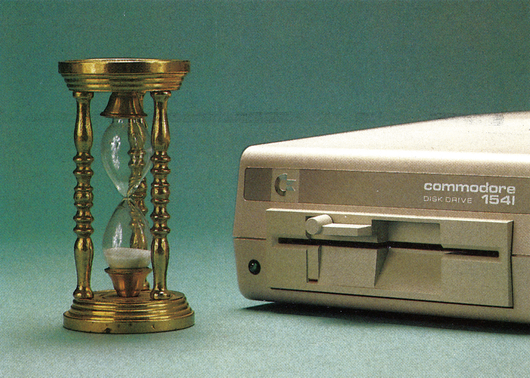
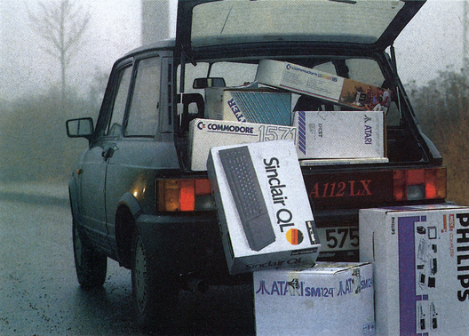
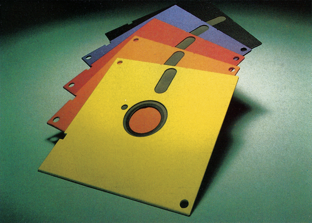

Vorschau
Sonderhefte
Als nächstes 64'er-Extra finden Sie ein Inhaltsverzeichnis aller bisher erschienenen Sonderhefte. So wird auch die Suche nach Beiträgen in 64'er-Sonderheften zum Kinderspiel!
Datenbank & Co
Zwei der bekanntesten und leistungsfähigsten Datenbanken für den C 128 treten in einem Test gegeneinander an: dBase II und Superbase 128. Auf das Ergebnis darf man heute schon gespannt sein. Weiterhin testen wir für Sie ein brandneues Programm zur Datenverwaltung mit dem C 64. In einer Marktübersicht finden Sie schließlich die wichtigsten Funktionen der bekanntesten Dateiverwaltungsprogramme für den C 64 und C 128 auf einen Blick.
Ein Rechengenie ...
...ist der C 64 ja nicht gerade, vor allem in Sachen Rundungsfehler. Die ist vor allem in mathematischen Programmen ärgerlich, die auf exakte Zahlen angewiesen sind. Unsere Anwendung des Monats korrigiert sämtliche mathematischen Ungenauigkeiten des C 64 und erweitert obendrein die Rechengenauigkeit von 10 auf 13 Nachkommastellen.
Spielhallenspaß im Wohnzimmer
In den letzten Wochen haben viele Software-Produzenten ihre ganze Aufmerksamkeit der Produktion von Spielhallen-Umsetzungen gewidmet. Das Angebot ist so groß, daß die Käufer geradezu mit solchen Titeln überflutet werden. Deswegen werden in der nächsten Ausgabe ganz ausführlich die wichtigsten Titel der letzten Wochen besprochen.
Kopien im Nu
Die Besitzer von vielbenutzten Disketten können aufatmen. Wir bieten Ihnen ein schnelles Backup-Programm mit ungewöhnlichen Leistungsmerkmalen als Listing des Monats an. »Copy Plus« arbeitet mit paralleler Datenübertragung, ohne daß das Betriebssystem des C 64 ausgetauscht werden muß. Alles, was benötigt wird, ist das sogenannte »Speeddos-Kabel«.

Grauimporte
Dunkel sind die Kanäle, über die Computer und Peripheriegeräte gelegentlich zum Kunden kommen. Wie kommt es zu den großen Preisunterschieden zwischen einzelnen Anbietern? Wie trifft man die richtige Kaufentscheidung? In unserem aktuellen Bericht legen wir offen, was von manchen Billiganbietern zu halten ist und welche Nachteile mit dem Kauf zum Niedrigstpreis verbunden sein können.

Rund um die Floppy
In der nächsten Ausgabe werden wir Sie mit wichtigen Informationen über Disketten versorgen. Sie erfahren alles über die Herstellung und Qualitätsunterschiede von Disketten. Wir stellen Ihnen wichtiges Zubehör für Ihre Floppy-Station vor und bringen eine Marktübersicht über 5¼-Zoll-Disketten. Zusätzlich geben wir auch Hinweise zur Pflege von Disketten und Floppy-Station.

Die neunte Nadel des MPS 802
Wußten Sie schon, daß der MPS 802 neun Nadeln für den Druck hat? Mittels einer kleinen Zusatzhardware kann diese brachliegende Nadel nun genutzt werden. Diese Erweiterung wurde von dem Entwickler des Super-ROMs aus der Ausgabe 1/87 zusätzlich entworfen. Mit dem dort abgedruckten Super-ROM und dieser leicht zu bastelnden Hardware wird der MPS 802 zu einem richtigen Spitzendrucker. Die störenden weißen Streifen beim Grafik-Druck fehlen zum Beispiel ganz. Aber auch das Unterstreichen mit Vizawrite wird nun endlich möglich. Der Hardware-Aufwand ist minimal und kann von jedermann einfach realisiert werden.